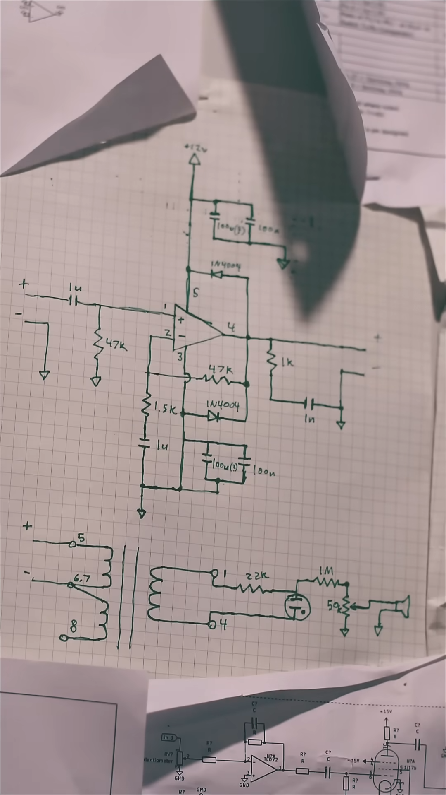
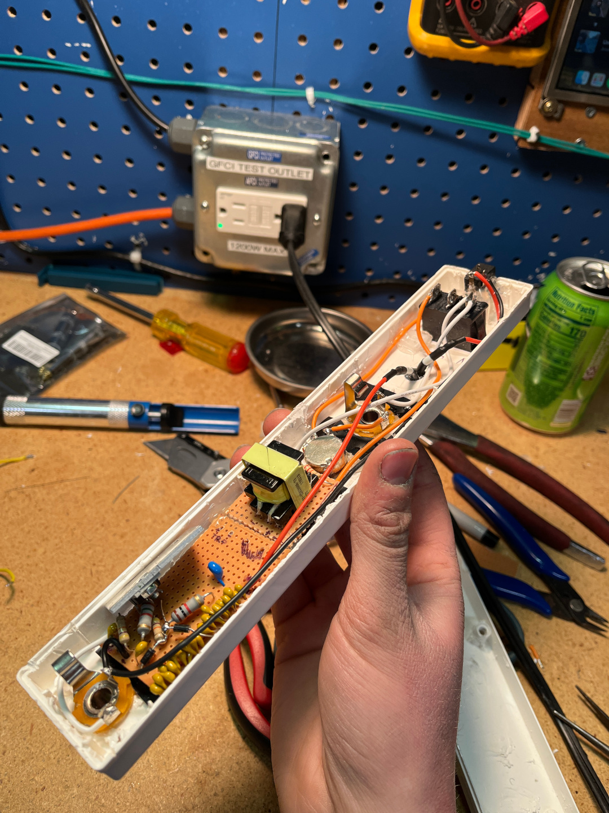
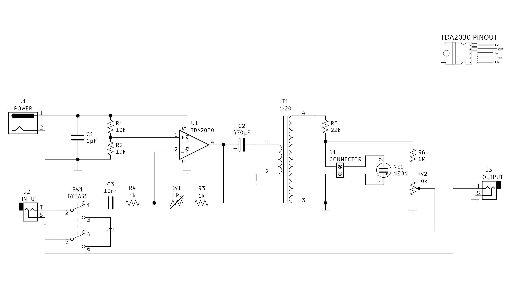
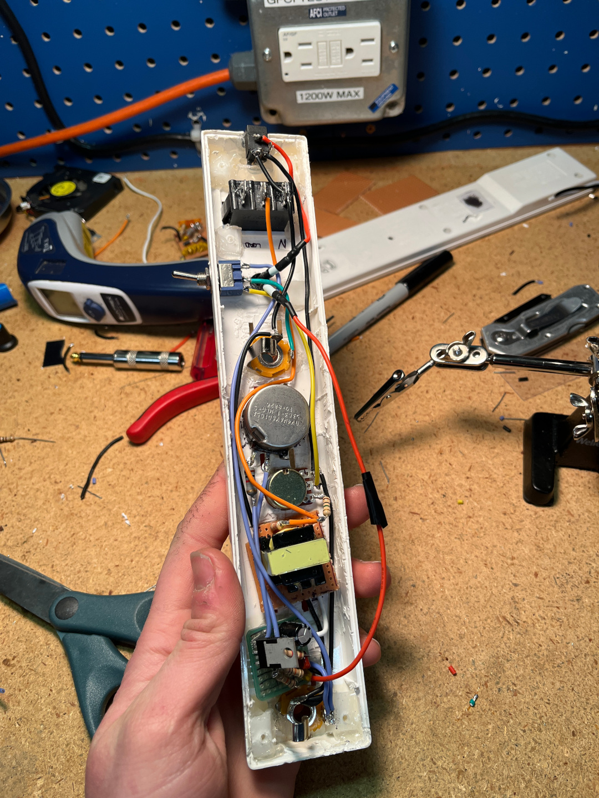
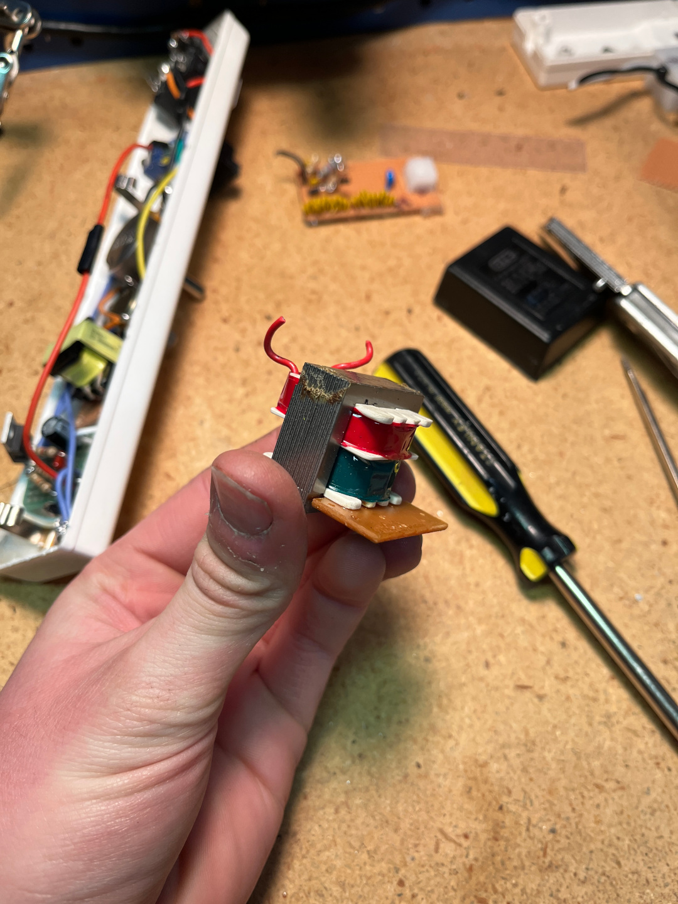
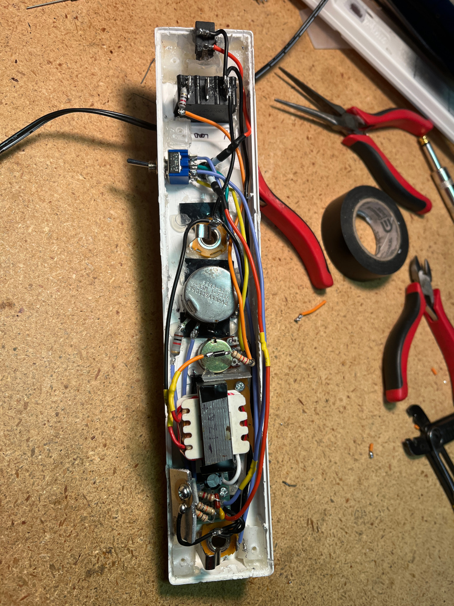

IKEA power strip distortion pedal
So my friend Gavin sent me this video by a youtuber we both watch, where he took an IKEA power strip and turned it into a distortion pedal.
essentially he's using an op-amp to amplify the guitar up to ~12v, then running that backwards through a 1:10 step-down transformer, so that it steps up the signal from ~12v to ~120v, then that signal runs in parallel with a neon bulb, then it's run through a 1MΩ resistor so its brought back down to ~2v. a wild journey.
below is the schematic he included in the video:
this schematic is mostly good, but it has some issues. for one, the camera's out of focus near the top so I can't read the capacitor values. second, he never says what op-amp chip he used. so i ended up just buying a cheap pack of TDA2030A's hoping they'd work. I mean, their pinout matches his schematic.
well, i tried building it, and it didn't really work. i mean it technically worked, in the sense that it distorted the signal, but the neon bulb didnt turn on, and the IC got hot to the touch, (it got up to over 200°F) even with a heat sink. i had to find another solution.
here's what it looked like wired up, though:
yes, i chained together 10x 10uF capacitors to make 100uF capacitors, because i didn't have any. i doubt that would cause the overheating.
gavin and i started googling. we were trying to find anybody else who had done something similar to this. and luckily, we found this video:
i cannot even count the amount of times i have had an issue in an electronics project, and then some random indian guy on youtube saves the day.
so not only did he fully demonstrate this circuit, he ALSO linked a schematic in the description AND a parts list! and you know what's even better? he used a TDA2030! I have an abundance of those now!
here's his schematic:
since this project, i've actually used this schematic as a base for just a regular amp circuit with the TDA2030. take a look at the hail-o-matic amp. the amplifier circuit is literally just a copy paste of the first half of this.

this is the second iteration of the pedal, which uses the new schematic. I even got to use a vintage clarostat 1MΩ potentiometer!
this circuit mostly worked! it distorted the guitar, it didn't get hot, but it still wasn't turning on the neon bulb. so i decided to look at the output from the transformer with my oscilloscope.
bingo.
this transformer came from a 12v wall wart, however it was a newer one, and also had a second, smaller transformer. i thought it was small enough that most likely it didn't make a huge difference with my application. but i was wrong. this transformer was only outputting around 18V. why? well i forgot to mention that this new circuit was designed to run off of 9v rather than 12v. but even if i were to put in 12v, this transformer still won't do. so what's the solution?
the next day i went to hamfest, and i bought about a banker's box worth of stuff. including: an older looking 9v wall wart. I bought it hoping it was old enough that it was just a single transformer inside. and i was right.

the perfect transformer. one input, one output.
i wired it up. plugged the guitar in. it still didn't work. WHY?
i checked it with the oscilloscope again, and the voltage was just below 80v. so i tried something. I tried powering the circuit with 12v instead of 9v. and you know what? it worked! and the chip was fine with it too, since it was designed to handle up to like 24v or something.

here's the final wiring. i would say that i managed to make it all fit inside the plugbar, but technically that's incorrect, since i had to make the back larger in order to fit the transformer.
here's my final schematic:

and here's a video of gavin playing it:
so there you have it. the world's most cursed guitar pedal